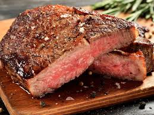

Home
Sirloin Steak with Garlic Butter

I have never tasted any other steak that came even close to the ones made with this recipe. If you are having steak, don't skimp on flavor to save a few calories. The butter makes this steak melt in your mouth wonderful.
Ingredients
- ½ cup butter
- 2 teaspoons garlic powder
- 4 cloves garlic, minced
- 4 pounds beef top sirloin steaks
- salt and pepper for taste
Directions
- Preheat an outdoor grill for high heat
- In a small saucepan, melt butter over medium-low heat with garlic powder and minced garlic. Set aside.
- Sprinkle both sides of each steak with salt and pepper.
- Grill steaks 4 to 5 minutes per side, or to desired doneness. When done, transfer to warmed plates. Brush tops liberally with garlic butter, and allow to rest for 2 to 3 minutes before serving.